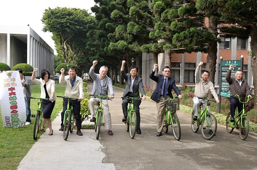
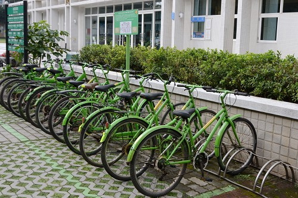

🌍 您的綠色足跡
依據歐洲自行車聯盟的研究基準，以自行車取代燃油車，平均每騎乘 1 公里可減少約 250 克 的碳排放。
本日節碳量
0 克
累積總節碳量
中大愛心綠色腳踏車

回憶中穿梭在松林間的翠綠身影
如果你是在 2010 年左右漫步在中央大學的校園，你一定會注意到那一抹穿梭在松林間的鮮豔色彩——「中央小綠綠」。
「中央小綠綠」是中央大學於 2010 年前後發起的校園綠色腳踏車計畫。在那個 YouBike 尚未普及的年代，學校為了推廣低碳校園、減輕校內機車負擔，特別購置了一批翠綠色的單車。這些腳踏車採取「公共共享」的概念，讓學生與教職員能自由騎乘於教學區、宿舍與餐廳之間，是許多中大人心中共同的校園標誌。

然而，隨著時間推移，車輛損耗、維護經費不足以及管理機制等挑戰，讓這群綠色身影逐漸消失在校園的角落，最終走入了歷史。
雖然「小綠綠」退場了，但當初那份永續校園與共享便捷的初心不應被遺忘。在 2026 年的今天，面對氣候變遷與減碳轉型的浪潮，我們立志要「復活中央小綠綠計畫」。
我們不只是想帶回那輛腳踏車，更是要結合現代的數位管理與社群力量：
依據歐洲自行車聯盟的研究基準，以自行車取代燃油車，平均每騎乘 1 公里可減少約 250 克 的碳排放。
本日節碳量
累積總節碳量
1. 牽至【校內修理站】進行規格改裝。
2. 註冊系統並安裝 GPS 電子鎖。
技師上架後，系統自動回饋 $50 帳戶儲值金！
為確保車輛符合改裝標準，請上傳 3 張清晰的車輛照片。審核通過後，方可牽至修理站。
⚠️ 報修後車輛將立刻從地圖隱藏，請牽至修理站維修。
| 申請學生 | 申請時間 | 操作 |
|---|
| 報修車號 | 損壞描述 | 操作 |
|---|
無固定站點借還，單次騎乘將扣除帳戶餘額 $5
*請查看實體腳踏車電子螢幕上的 4 位數密碼
GPS 追蹤監控運行中